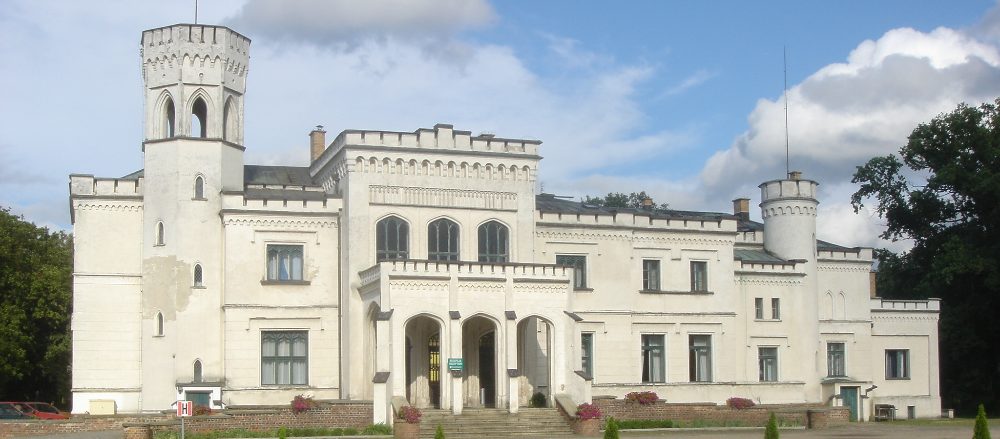

GETCO 2027 will take place in Będlewo between 7 and 11 June 2027.
The Geometric and Topological Methods in Computer Science (GETCO) conference series focuses on applications of algebraic topology in computer science with special emphasis on concurrency, distributed computing, networking and other situations related to systems of sequential computers that communicate with each other. It is aimed at mathematicians and computer scientists working in or interested in these subjects, including researchers and graduate students. The aim of the conference is to exchange ideas and to initiate or expand research collaborations.
We are calling for submission of original, unfinished, already published, or otherwise interesting work within the topics of the GETCO conference. The submission can be in the form of a poster, an abstract, a paper submitted to or published at another conference, or in any other format. GETCO has no formal proceedings, but as for earlier conferences, we intend to publish a journal special issue with revised and extended versions of a selection of the contributions.
| Name | Affiliation |
|---|---|
| Uli Fahrenberg | LMF, Université Paris-Saclay, France |
| Sergio Rajsbaum | UNAM, Mexico; IRIF, Paris, France |
| Krzysztof Ziemiański | University of Warsaw, Poland |
| Name | Affiliation |
|---|---|
| Uli Fahrenberg | EPITA, Rennes, France |
| Lisbeth Fajstrup | Aalborg University, Denmark |
| Dmitry Feichtner-Kozlov | University of Bremen, Germany |
| Eric Goubault | École polytechnique, Paris, France |
| Samuel Mimram | École polytechnique, Paris, France |
| Sergio Rajsbaum | UNAM, IRIF, Mexico, Paris, France |
| Martin Raussen | Aalborg University, Denmark |
The first GETCO conference was held in Aalborg in 1999. Applications of algebraic topology in concurrency was a new subject, fostered by seminal papers such as those by Vaughn Pratt in ACM POPL 1991 and Eric Goubault at CONCUR 1992 and CONCUR 1993, on the formal methods side, and the ACM STOC 1993 papers by Herlihy-Shavit and Saks-Zaharoglou, on the distributed computing side; brought to attention in the Workshop on New Connections between Mathematics and Computer Science, organized by Jeremy Gunawardena in Cambridge Nov. 1995.
The following seven GETCO workshops were held as satellites to CONCUR or DISC, the main conferences on concurrency and distributed computing. The 2nd was held at Penn State University, in 2000, then in Aalborg in 2001, Toulouse 2002, Marseille 2003, Amsterdam 2004, San Francisco 2005, and Bonn 2006.
The 2010 workshop had a broader scope and included further applications of algebraic topology including robotics and shape analysis. GETCO was back in Aalborg for its 9th edition in 2015, expanding to topics such as data analysis. By then, an ESF network ACAT, Applied and Computational Algebraic Topology, had been established, and two books had been published, Distributed Computing Through Combinatorial Topology and Directed Algebraic Topology and Concurrency; some of many indications that applications of algebraic topology to concurrent systems is now a mature subject, widespread and with impact in many fields.
The 10th GETCO, which took place in Oaxaca, Mexico in 2018, expanded further to neuroscience and learning applications. The 11th edition was originally planned for 2020 and was held in 2022 in Paris. The 12th GETCO was held as a special session of the Nordic Congress of Mathematicians in Aalborg in 2023.